全自動整合
串接射出、植毛與包裝流程，結合六軸機械手臂，實現高效率自動化生產。
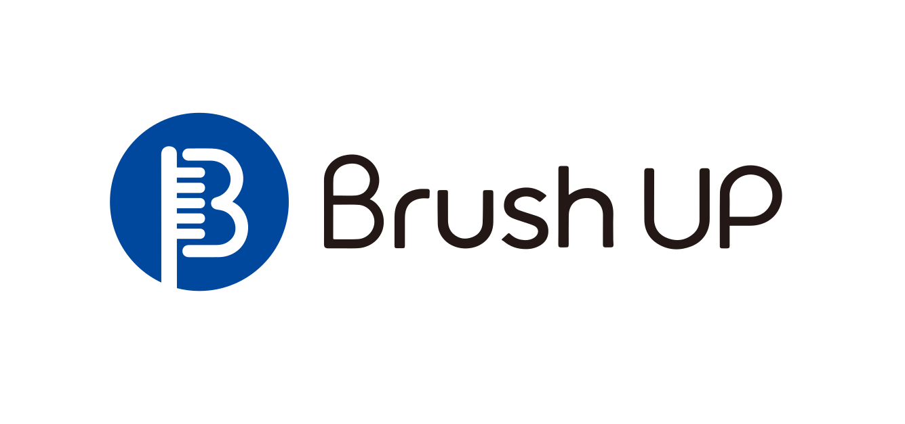
提供從植毛核心製程、自動化整合到 AOI 視覺檢測的一站式解決方案。

串接射出、植毛與包裝流程，結合六軸機械手臂，實現高效率自動化生產。
即時辨識異常並自動剔除，降低損耗，提升產品良率與品質穩定性。
高度整合軟硬體系統，2 位操作員即可管理 3 台設備。
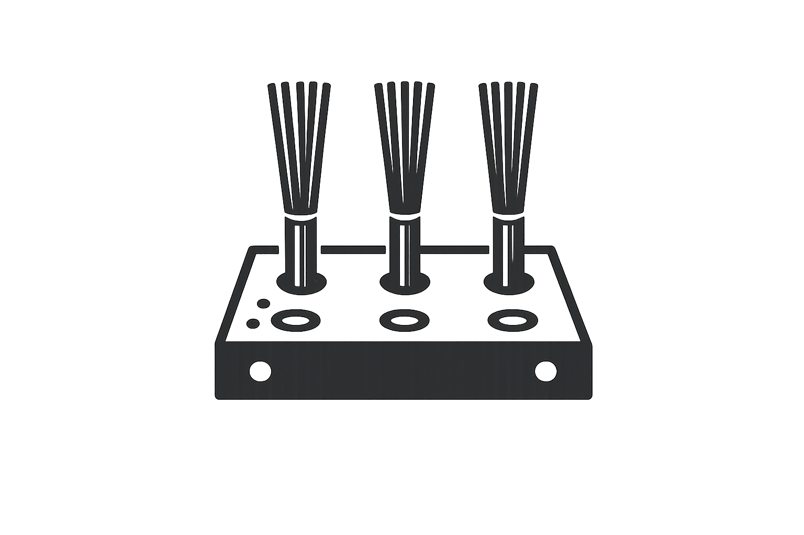
依賴金屬銅片固定，孔位與密度受限。
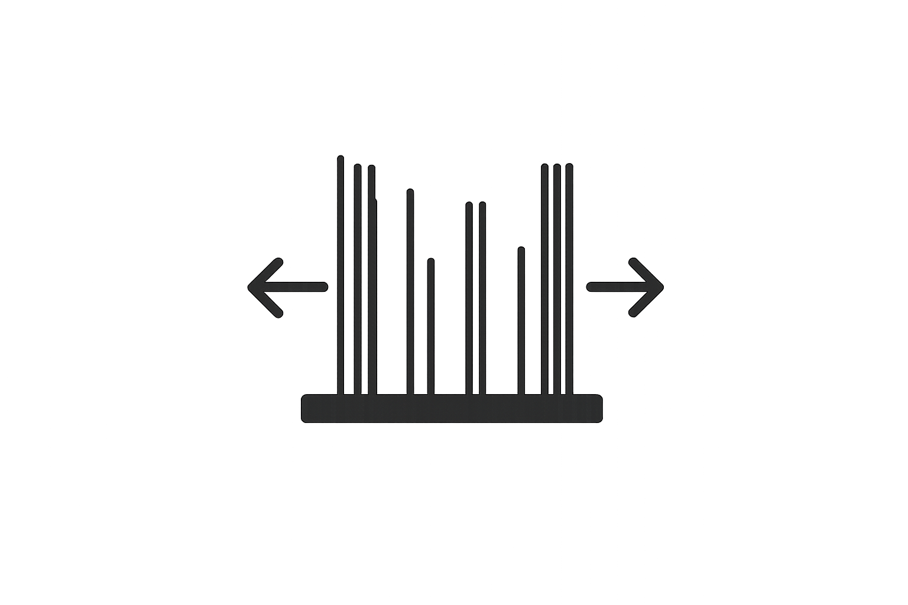
傳統製程限制刷毛密度，拉力與穩定性不易提升。
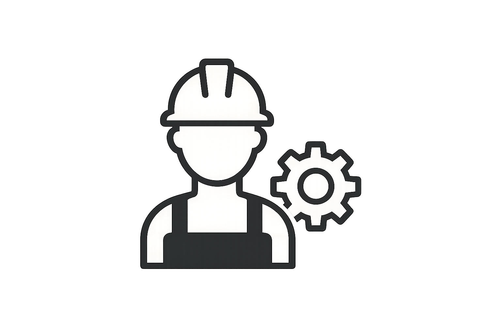
製程高度依賴人力，品質與產能不易穩定。
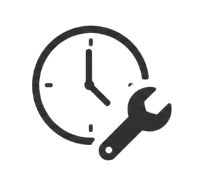
換模停機時間長，難以應對多樣少量訂單需求。
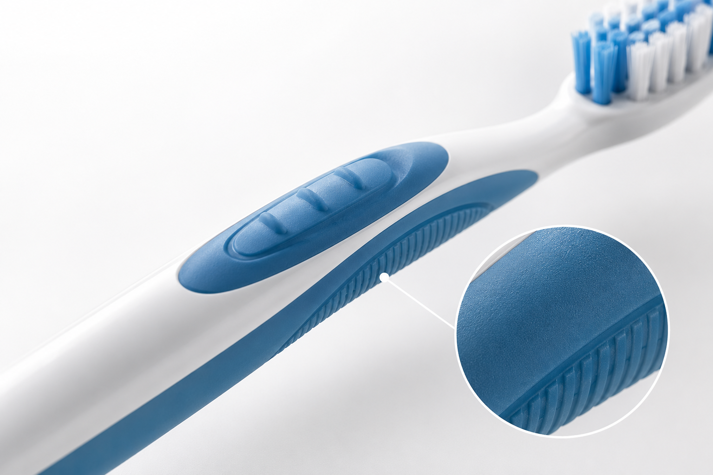
結合多材質刷毛與軟膠結構，提升舒適度與清潔效率。
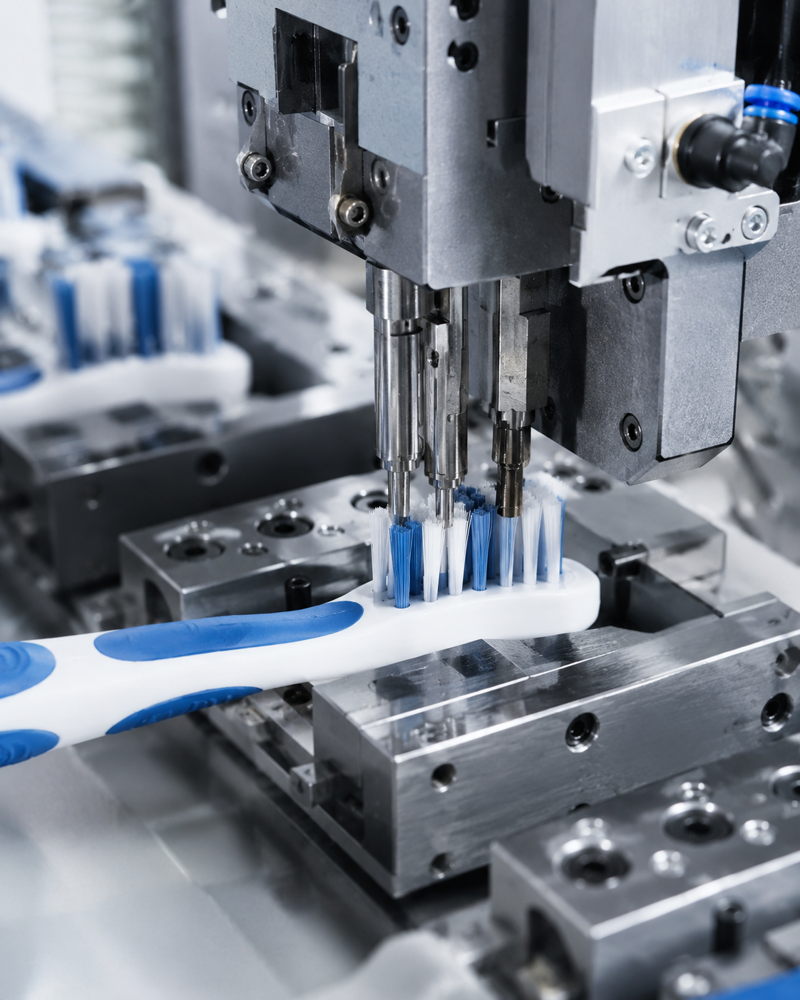
孔填充率可達 90% 以上，搭配專利固定技術，提升刷毛穩定性與抗拉力。
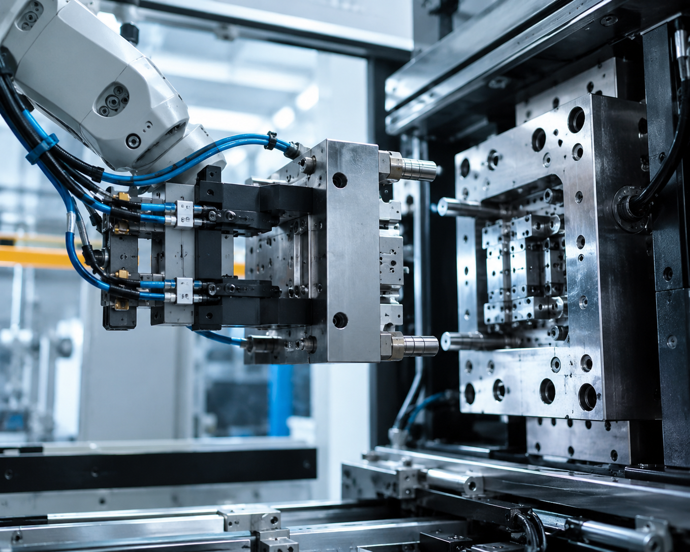
縮短換模與治具切換時間，提高生產彈性。
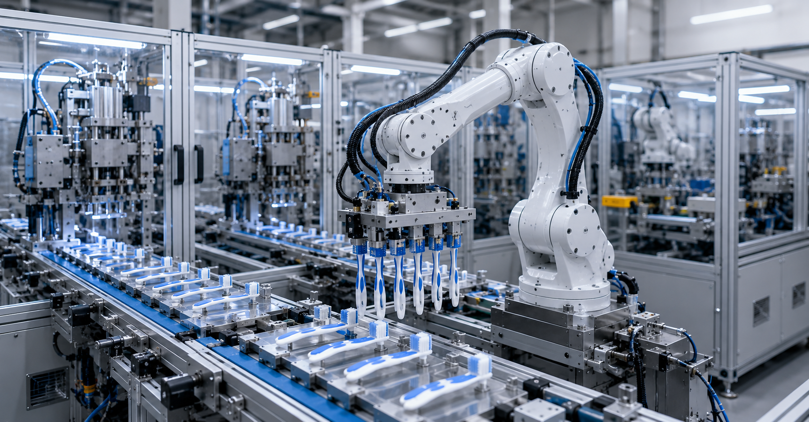
串接植毛、射出與後段流程，降低人工搬運與工序時間。
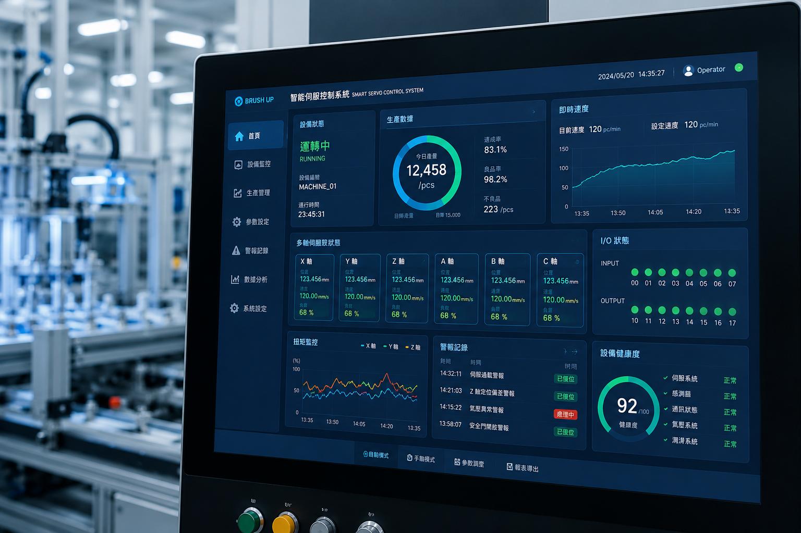
多軸伺服與感測系統提升定位精度，確保穩定量產。
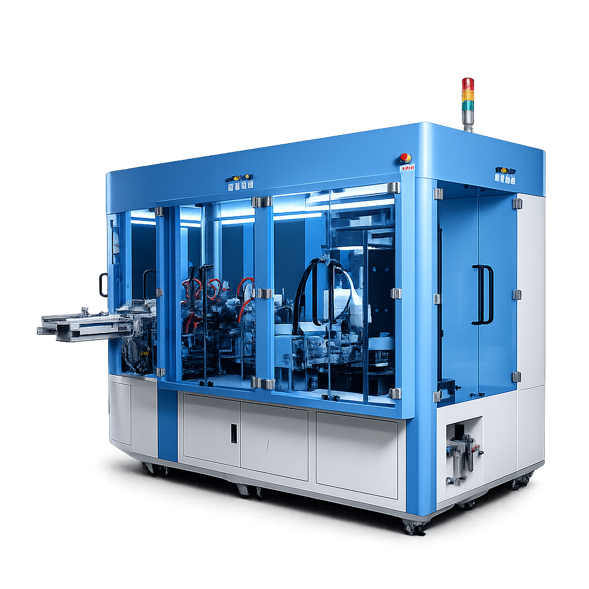
可應用於高密度刷頭、複合材質刷毛與多樣化牙刷產品，滿足不同市場需求。
提供設備調試與技術協助，確保產線穩定運作。
提供完整技術支援與售後保障。
完整教育訓練，協助快速上手。
冠璟科技承襲倉杰超過 30 年的產業基礎，專注於高階牙刷設備研發與製造。
無金屬製程提升產品可回收性，兼顧效率與永續。
設備通過 ISO 9001、CE 等國際標準認證。
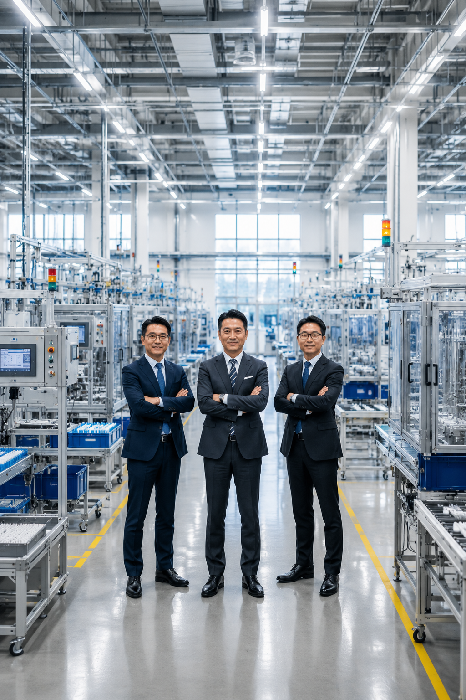
導入全自動無金屬植毛技術，兼顧品質、效率與永續需求。